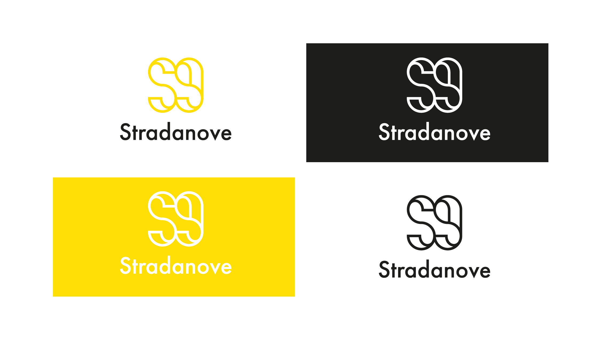
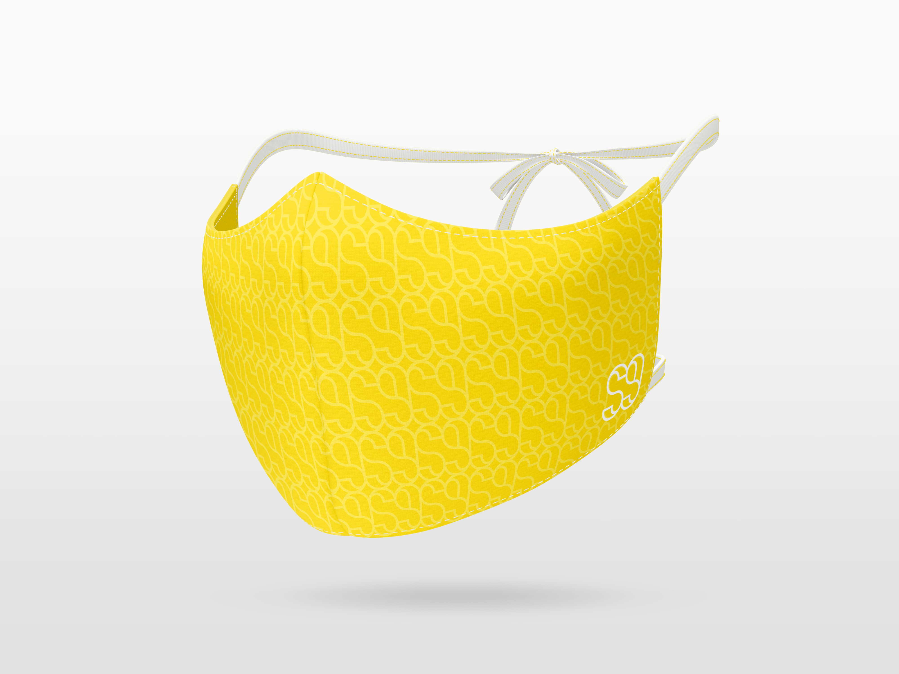

STRADANOVE
"Seeker" are the people who follow me on my journey, between forgotten places, villas, castles, mental hospitals, and churches. They have no face, because they can be anyone, they can only be passing through or living there forever. This series started in 2016 is my main project, the one I carry out with more determination. All the photos were taken in really abandoned places.

